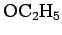

Inhalt Index DeskTop Bronstein

 Algebra und Diskrete Mathematik Klassische algebraische Strukturen Anwendungen von Gruppen Symmetrieoperationen bei Molekülen
Algebra und Diskrete Mathematik Klassische algebraische Strukturen Anwendungen von Gruppen Symmetrieoperationen bei Molekülen


Es erfordert viel Routine, um alle Symmetrieelemente eines Objektes zu erkennen. In der Literatur, z.B. in Lit. 5.17, 5.19, 5.24, ist ausführlich beschrieben, wie man die Symmetriegruppen von Molekülen erhält, wenn alle Symmetrieelemente bekannt sind. Zur räumlichen Darstellung der Moleküle kann die aus der folgenden Abbildung ersichtliche Symbolik verwendet werden:
Das Zeichen oberhalb bedeutet, daß sich hier die -Gruppe über der Zeichenebene befindet, das Zeichen rechts neben , daß sich die -Gruppe unter ihr befindet.
Die Bestimmung der Symmetriegruppe kann in Abhängigkeit davon erfolgen, ob es keine Drehachse gibt, genau eine oder mehrere (s. die nächsten drei Abschnitte).